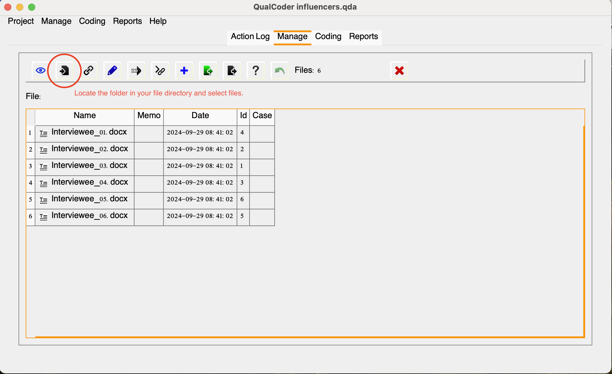
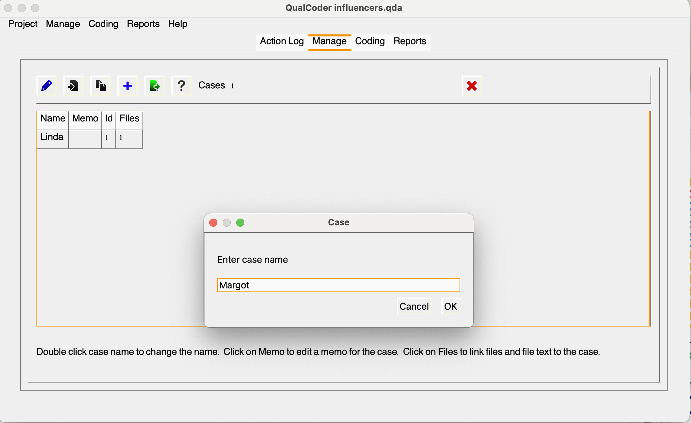

QualCoder
What is QualCoder?

QualCoder is client-based open-source and free multi-platform tool designed to streamline qualitative data analysis. With its user-friendly interface and comprehensive features, QualCoder empowers researchers and analysts to efficiently organize, code, and analyze qualitative data, ranging from text documents to multimedia files. By providing tools for coding, categorizing, and retrieving data. QualCoder facilitates in-depth exploration and interpretation, enables researchers to uncover meaningful insights and patterns, and extracts rich and nuanced information from their qualitative data.
With QualCoder, you can code text, images, audio and video, and write journal notes and memos. You can categorize codes into a tree-like hierarchical categorization scheme. Coding for audio and video requires the VLC media player. Coder comparison reports can be generated for text coding using Cohen’s Kappa statistic for interrater/intercoder reliability, which measures the level of agreement between coders. A graph displaying codes and categories can be generated to visualize the coding hierarchy. Most reports can be exported as html, open document text (ODT) or as plain text files.
Documentation:
GitHub Repository - https://github.com/ccbogel/QualCoder
GitHub Repository (QualCoder AI - beta) - https://github.com/kaixxx/QualCoder/tree/ai_integration
You can follow installation and running instructions for your operating system. Please note, however, that this is a multi-step process requiring additional components and the command line/terminal. We are available to consult with individuals or groups that require assistance in that process.
To save time, for this workshop, we will skip the installation process and grant learners access to a virtual machine with QualCoder pre-installed. We use the latest available version of the software (currently 3.5) for the coding and reporting activities.
Launching QualCoder
To run QualCoder from the command prompt or terminal, use the following commands:
Mac
From any directory: qualcoder From the QualCoder-Master directory: python3 -m qualcoder or python3 qualcoder/__main__.py
Windows
From the command prompt: py -m qualcoder
Do not close the terminal or command prompt running in the background; otherwise, you will exit QualCoder. If you minimize the QualCoder window and get lost, you may click the Python Launch icon.
Basic Functionalities
We will cover some basic settings and terms (attributes, including how to create a project and how to engage with coding. If you are following this content asynchronously, we strongly advise you to watch the following video for additional features:
Other helpful tutorials can be found here: https://github.com/ccbogel/QualCoder/wiki/15-QualCoder-videos
Anatomy of a QualCoder Project
In QualCoder, projects serve as containers for organizing multiple files, cases, and attributes. Each project allows you to manage and analyze a specific qualitative data set, keeping everything organized. You can create different projects for distinct research questions or datasets, enabling a streamlined workflow. This structure helps you delve deeper into your analysis without mixing different data sets.
Understanding the roles of files, attributes, cases, and their relationships is key to most QDA software. In QualCoder, files refer to the individual documents or data sources you import for analysis. You may have more than one file associated with a unique case. Cases are specific units of analysis, often linked to files, that allow you to organize and explore your data with more detail. Together, they create a structured environment for qualitative analysis, allowing you to delve into themes and patterns effectively. In our project example, the cases will consist of individual interviewees, but we could also focus on their niche if we were to analyze at that level.
For example, let’s imagine that Sarah also collected social media video posts from content creators and digital influencers to analyze behaviors beyond participants’ self-reports by also checking how they have been engaging with their followers. In this case, she can add video clips to QualCoder and associate them with the same research participant. This structure will depend on the nature of your project, allowing for flexibility in how data is organized and analyzed to best capture the insights you seek.
Attributes are metadata or characteristics that can be assigned to files and cases, helping to categorize or describe them. Examples related to our project example could be demographic pieces of information (e.g., gender, age group), years active, niche, total followers assigned to individuals represented as cases, or characteristics attributed to a file such as the type of source (e.g., interview, social media), total numbers of views, shares and comments, platform (e.g., IG, Youtube, TikTok). You may use memos to record more detailed information about attributes. Think of it as an essential aid to documentation that will provide better contextualization so researchers, including your future self, can better interpret and understand decisions made during the research process.
As a heads-up, QualCoder was not designed to analyze attributes statistically. For that, you can export attributes as CSV files and use R or another open dedicated application. Also, the only current options for attributes are numeric and character, so dates, types, or integers are not supported. We will see how we can export attributes later.
You can utilize Journals to practice data journaling and document ideas and reflections throughout the coding process, making them searchable with regex expressions—a topic we’ll explore later. Journals are particularly useful for bottom-up approaches, requiring multiple iterations to refine your themes and coding scheme. Plus, you can enhance your journaling content with markdown formatting!
Our Example Project in QualCoder
Let’s now set Sarah’s project in QualCoder, bring the files into the project, and perform some housekeeping and organization before engaging with actual coding.
Creating a Project
Project > Create New Project
Select the directory in which you want to save your qda project and name it Influencers.
Loading Files
We’ve created a project but don’t have any files yet, so let’s load them now. Choose and manage files, and then, the second icon as noted below (Import File Into Project Folder), select the desired folder and files.

Note that the file ID will be assigned according to the import order, so if you want that to match your file naming convention, you should order it accordingly. If you need to fix it, click the red X on the right and delete the files, then reorder them accordingly and import them again into QualCoder.
You may double-click on the file or choose the “eye icon” to open its content. Don’t worry about the information at the bottom of the window for now; we will cover that later.
Organizing Things
Create Cases
Now, let’s create a case for each interviewee and link the transcript to them accordingly. We will use the same pseudonym assigned to each research participant described in the file.
Manage > Manage Cases > Pencil (Add Case) > Add your Case Name

Link Files
Now, let’s link the corresponding file to the case we created. Click on the file cell to manage files for the case. This will prompt another window, as shown below:

Now, create cases and link the files for each of the interviews. You should have one for Linda, Margot, Gina, Otto, Ben, and Alex. Note that you can also import CSV files with cases. This can be handy, especially for projects with several cases.
Describe Attributes
Each transcript has some characteristics associated with interviewees. It would be helpful to describe these as attributes for further analysis. We will only add two attributes: age group and niche. There are two different ways to create attributes: via manage > manage attributes or in the manage file window, you may select the blue plus sign. The latter might be more convenient in this case, considering we have only a few attributes and cases.
We will assign age groups (25-29, 30-35, or 35-40) to each case and add their respective niches.

You can easily edit attribute values directly in the interface. However, to delete or modify an existing attribute column, please navigate to Manage > Manage Attributes
We won’t need to add memos for now, but they can provide additional context when attributes aren’t immediately apparent.
We now have a well-organized project in QualCoder, so let’s jump into some coding!
Recommended/Cited Sources:
Cheung, K. K. C., & Tai, K. W. H. (2021). The use of intercoder reliability in qualitative interview data analysis in science education. Research in Science & Technological Education, 41(3), 1155–1175. https://doi.org/10.1080/02635143.2021.1993179